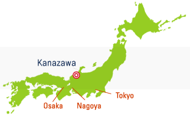
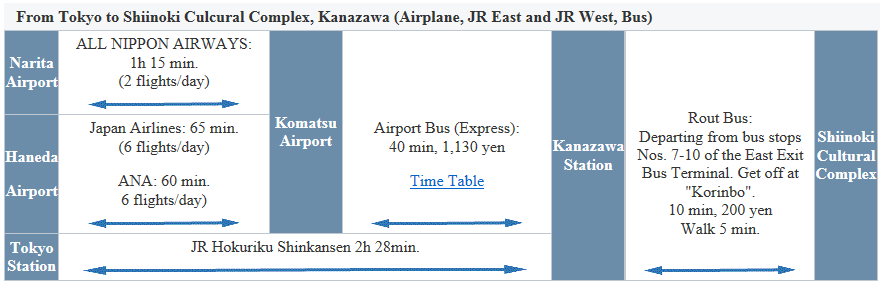

Sponsors
Sponsored by:
In Cooperation with:
HIS SIG-CE
VRSJ SIG-CyberSpace
JAIST
Faculty of Library, Information and Media Science, University of Tsukuba
SCAT Foundation
Ishikawa Prefecture
Kanazawa City
Hitachi, Ltd.
-
Workshop
-
The International Workshop on Technology-Enhanced Collaborative Learning (PDF)
The International Workshop on Learning Analytics and Educational Data Mining (LAEDM 2016)(PDF)


Conference Venue

CRIWG 2016 will be held in Kanazawa. Kanazawa is the prefectural capital of Ishikawa Prefecture in the central part of the main island Japan and is famous for Japanese garden, sake (Japanese rice wine), sea foods, traditional crafts and sweets, etc. The Hokuriku Shinkansen (a high-speed railway line) from Tokyo to Kanazawa, it takes about 2.5 hours, started operating on March 14, 2015. Kanazawa becomes the hottest city for sightseeing.
Kanazawa was a great castle town ruled by an influential leader from the 17th century to the second half of the 19th century. Kanazawa has not suffered from any war devastation or big natural disasters. Thus, Kanazawa has maintained rows of historical houses and various traditional handicrafts and traditional performing arts.
The climate of Kanazawa is almost as mild as that of Tokyo or Osaka. There are few days with temperatures below freezing between December and February. However, there are few days of fine weather, and the snow often piles up.
The main conference venue for CollabTech2016 is Shiinoki Cultural Complex, Ishikawa Prefecture (しいのき迎賓館 in Japanese) (http://www.shiinoki-geihinkan.jp/about/english.html) and The Kanazawa Theater (金沢歌劇座 in Japanese) (http://www.kagekiza.gr.jp/). The venue is conveniently adjacent to downtown (Korinbo) in Kanazawa city and famous Japanese garden named Kenrokuen (兼六園 in Japanese)(http://www.pref.ishikawa.jp/siro-niwa/kenrokuen/e/index.html).
Access

More venue information
- Shiinoki Cultural Complex (http://www.shiinoki-geihinkan.jp/about/english.html)
- Pamphlet of Shiinoki Cultural Complex (http://www.shiinoki-geihinkan.jp/pdf/2014english.pdf)
- The Kanazawa Theater (http://www.kagekiza.gr.jp)(in Japanese)
- Hokuriku Shinkansen: high-speed railway (https://www.westjr.co.jp/global/en/travel-information/shinkansen/hokuriku-shinkansen/)
- Komatsu Airport Website (http://www.komatsuairport.jp/index_en.html)
- JapanVisitor - Kanazawa City (http://www.japanvisitor.com/japan-city-guides/kanazawa-city-guide)
- KANAZAWA Tourism Website (http://www.kanazawa-tourism.com): Attention! the access information(How to reach Kanazawa) is old.